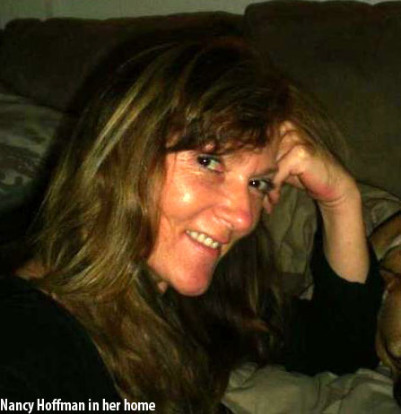
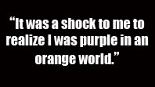
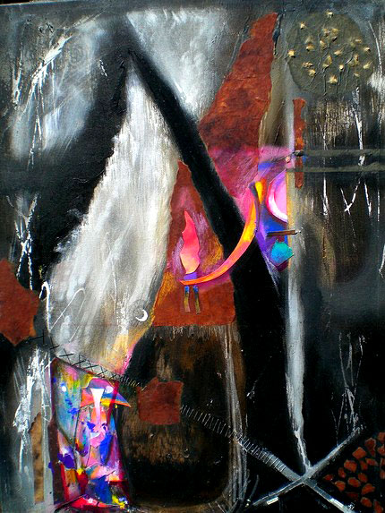
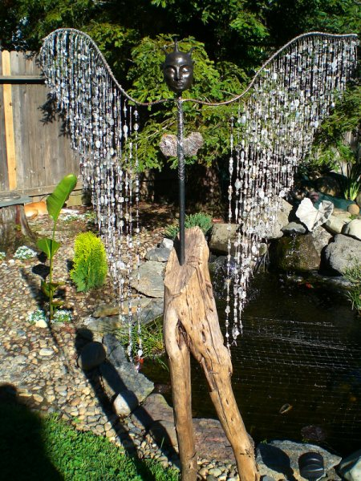

UNDISCOVERED
By: Ciera Mckissick
Van Gogh spent his entire life waiting. During his lifetime, Van Gogh had little success before his death. Now, his work is in museums around the world, on postcards and mimicked by art hopefuls waiting for the dream. Today Vincent Van Gogh is considered one of the greatest artists of all time. Perhaps someday people will be saying that about Nancy Hoffman. 
Hoffman says she has been an artist since birth. She came out the womb with a paint brush in hand and to a world of inspiration. She recalls having her first artistic inkling in her crib. 
“I remember watching the light change on the wall next to my crib. That was it,” Hoffman says. “And, apparently, according to family history, there was a neighbor who had his sailboat up in the yard for painting. [It was] white with blue trim. I must have thought it needed more blue…It was art without supervision—the best kind.”
She completed her first piece of art in Kindergarten, “the purple pumpkin.” Surrounded by her peers and fellow schoolmates who were drawing conventional orange pumpkins, Hoffman realized that she didn’t see the world in a conventional way, but through an artistic lens.
“It was a shock to me to realize I was purple in an orange world. It was quite awhile before I found my tribe,” Hoffman says. “And by tribe, I mean the art world—artwork by others, and others who make art.”
Hoffman discovered the art world a bit later. She studied art therapy at Mount Mary College in Milwaukee, Wisconsin, and fine arts at the Milwaukee Institute of Art and Design. She feels that a life without art would lay flat and barren. Art and life are one for Hoffman.
You can often see Hoffman in her art— whether it is in the intricacy of the detail, the layering effect, or the collages of shapes and figures that intertwine to create a greater whole. There lies the somber, the vibrant, and the wonders that hide within her work. Her art is her life story, and you can read it over time.
“Life, emotions, surrounding times, environment, are all things that affect us and cannot help but show up in our process,” Hoffman says.
Hoffman’s daughter, Jess—who she describes as one of her favorite artists for her “uncanny gift for object placement"— has been able to witness her mother’s life not only through her own eyes, but through her mother’s art.
“Art has always been the outlet for my Mom to fuel her emotions, her passions for life, whether it be sadness, happiness or anger,” Jess Hoffman says. “Being able to see my Mom, and her passion so clearly, and furthermore being surrounded physically by this passion, no matter what area of my home I am in, has helped me to learn ways to translate and be truly in touch with my own emotions.”
Nancy Hoffman believes that art can “touch humanity in ways nothing else possibly can,” and feels that it is her calling.
“I've never had a choice in rejecting it,” she explains. “It's always been what excites me most.”
Walking through the Hoffman house is like walking through an art gallery. Once when Jess had just finished her freshman year in college and was having a summer party at her home, one of her friends decided to lead a few people on an impromptu tour.
There isn’t a wall in the house that doesn’t have a piece of art hanging on it. There was a chalkboard wall hanging in one of the rooms that was a piece of art in itself because it consisted of drawings in white chalk. In the bedroom there was a mirror glass spray painted in gold with the lyrics to Peter Gabriel’s “In Your Eyes” carved into the spray paint so the lettering was mirrored. Simple things like this show that Hoffman sees the art potential in everything, and will often experiment with different mediums, and surfaces.
Nancy Hoffman has been known to use acrylics, thread, textiles, beads, and anything she can find—even a piece of driftwood. One of her biggest inspirations is trees—they hum to her and exude nobility. Simplification illustrates her move toward minimalism. 
Always interested in the beauty in the abstract, she is currently working with many different kinds of projects including; jewelry creations, playing with textiles, twig sculpture, and rock formations.
“I love abstract art because it tends to lead you, rather than you, it,” Nancy Hoffman explains. “It then goes on to lead individual viewers to their own places. It has a dimension of its own.”
Jess has been there to witness the ever-changing essence of her mother’s work. While one piece can be abstract, another can be realist. One could be neutral, while another can be bursting with color.
“The progression of color is one of my most distinct observations over the years,” Jess Hoffman says. “The color has changed from being light and pastel to being solid and bold…and this burst of life in her art communicates her personal progression of life and happiness. As she grows and gains wisdom, her art, which continues to surround me, grows as well.”